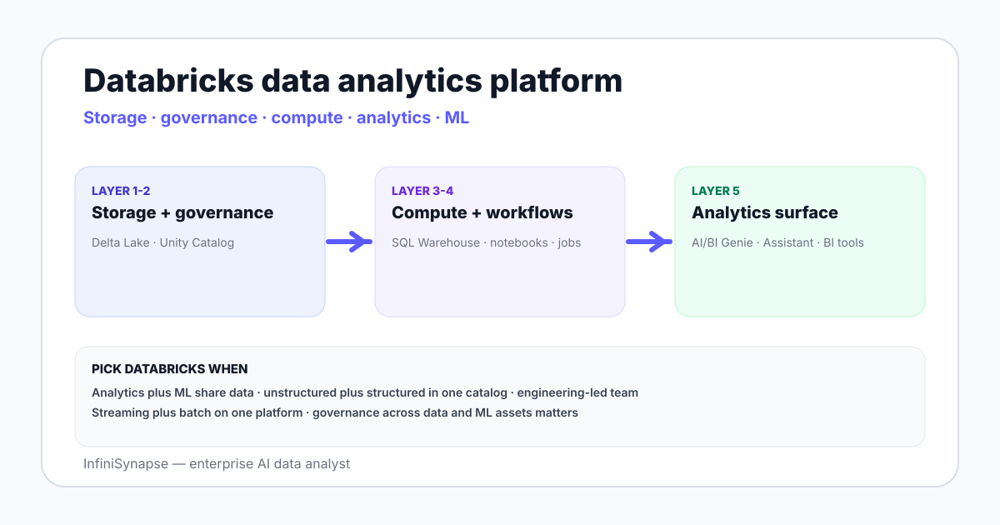

Databricks Data Analytics Platform in 2026: Capabilities and Tradeoffs
Databricks data analytics platform in 2026 — Unity Catalog, SQL Warehouse, Delta Lake, AI/BI Genie, and how the lakehouse fits next to Snowflake and BigQuery.
AuthorInfiniSynapse Research, product and data architecture team
Published2026-06-28 · Last verified 2026-06-28 · Next review 2026-09-28
Evidence baseDatabricks official documentation across Unity Catalog, SQL Warehouse, Delta Lake, Genie, and the platform reference; comparison docs vs Snowflake and BigQuery; field experience operating Databricks in production.
Disclosure: Published by InfiniSynapse, which connects to Databricks and competes with Genie on cross-source workloads. The review describes Databricks fairly and notes where an external data agent fits next to it.
TL;DR
The Databricks data analytics platform is the lakehouse — Delta Lake storage, Unity Catalog governance, SQL Warehouse compute, and the AI/BI Genie analytics surface — sold as one integrated stack.
Strengths are unified storage for analytics plus ML, governance across structured and unstructured data, and tight integration between engineering notebooks and BI surfaces.
For pure analytics workloads with no ML and modest cross-source needs, Snowflake or BigQuery sometimes lands cleaner; for analytics plus ML on shared data, Databricks is the strongest fit.
AI/BI Genie is the conversational analytics surface — see the dedicated Databricks Genie guide for the depth.
Cross-source analytics that span Databricks plus a non-Databricks warehouse still need a federation layer or an external data agent — Databricks does not natively query Snowflake or BigQuery.
The Databricks data analytics platform is the lakehouse — Delta Lake storage, Unity Catalog governance, SQL Warehouse compute, and AI/BI Genie analytics surface — as one integrated stack. Strongest for teams that need analytics plus ML on shared data with unified governance. Pure analytics teams sometimes land cleaner on Snowflake or BigQuery.

The five Databricks platform layers
Layer
What it does
Notes
Delta Lake
Storage format with ACID, time travel, schema evolution
The five layers are the working unit of Databricks in 2026. Older terms (Databricks Lakehouse Platform, Photon, etc.) describe how the layers are implemented, not what users actually interact with.
Analytics-specific capabilities
SQL Warehouse Serverless. Spin up compute on demand, pay for the time you use, scale to handle concurrent BI queries.
Photon engine. Vectorized SQL execution under the hood; transparent to most analytics users.
Materialized views and streaming tables. Pre-computed aggregates and incremental refresh patterns native to the platform.
Delta Sharing. Share data with external consumers without copying.
Genie + Assistant. The AI surfaces covered in the dedicated guides.
BI tool integration. Tableau, Power BI, Looker, Metabase, Hex connect natively.
Databricks vs Snowflake vs BigQuery for analytics
Dimension
Databricks
Snowflake
BigQuery
Primary identity
Lakehouse — analytics + ML on one platform
Cloud data warehouse
Cloud data warehouse + serverless analytics
Storage
Delta Lake (open Parquet + transaction log)
Proprietary columnar storage
Capacitor proprietary storage
Governance
Unity Catalog
Native role-based access + Horizon
IAM + Dataplex
SQL workload fit
Strong, especially with SQL Warehouse Serverless
Excellent — the default for SQL-first teams
Excellent — strong on serverless economics
ML workload fit
Native — MLflow, model registry, feature store
Snowpark + Cortex; growing fast
Vertex AI integration; separate platform feel
Cross-warehouse query
Federated queries to limited sources
Snowflake Data Sharing inside ecosystem
External tables to GCS, BigLake
The honest read in 2026: pick by the dominant workload. Analytics-only teams without ML often land cleaner on Snowflake or BigQuery; teams that do ML on warehouse data prefer Databricks. None of the three is a universal winner.
Where Databricks is the right pick in 2026
Analytics plus ML on shared data. Train models on the same Delta tables BI dashboards point at. No second copy of the data, no separate governance plane.
Unstructured plus structured data. Lakehouse storage handles images, audio, and text alongside structured tables in one catalog.
Engineering-led teams. Notebook-driven development with strong Python and Spark support is the daily UX.
Streaming plus batch. Delta Live Tables handles both workloads in one platform.
Self-serve analytics on lakehouse data. Genie provides the conversational surface on top.
Honest limits of the lakehouse for analytics
Operating cost. Without careful warehouse sizing and idle policies, costs grow faster than Snowflake or BigQuery at comparable volume.
Learning curve. Pure SQL teams sometimes find the breadth of Databricks (notebooks, jobs, ML, governance) heavier than they need.
Cross-source range. Native cross-source federation is limited; an external AI data agent covers the gap when Snowflake, Postgres, or files sit alongside.
Vendor concentration. Storage, compute, governance, ML, and analytics all from one vendor — strong fit signal but reduced bargaining position.
None of these are dealbreakers — they are the honest tradeoffs of an integrated platform.
Use cases that justify Databricks as the analytics platform
Risk and fraud analytics in financial services. Analytics queries plus ML scoring on shared transaction tables.
Personalization and recommendation in ecommerce. Behavior data feeds both BI dashboards and recommendation models.
Industrial IoT analytics. Time-series sensor data needs lakehouse-shape storage and ML-driven analytics together.
Healthcare and life sciences. Structured EHR plus unstructured imaging and text in one governed catalog.
Media and entertainment. Content metadata plus media assets in one analytical plane.
The lakehouse claim earns the lift only when analytics and ML share data. If one of the two dominates, look at single-purpose warehouses or single-purpose ML platforms.
Layer cross-source analytics on top of Databricks
Connect a Databricks workspace plus a second source — Snowflake share, Postgres, S3, or CSV — read-only into an AI data analyst. Ask one question that spans the lakehouse plus the second source — the kind native Databricks surfaces cannot reach alone.
Databricks is the lakehouse — an integrated platform with Delta Lake storage, Unity Catalog governance, SQL Warehouse compute, engineering notebooks and workflows, and AI/BI Genie conversational analytics. It is sold as one stack covering analytics, machine learning, streaming, and ELT on shared data, with a single governance plane spanning structured and unstructured assets.
How is Databricks different from Snowflake and BigQuery?
Databricks identifies as a lakehouse covering analytics plus machine learning on shared data; Snowflake and BigQuery identify as cloud data warehouses with strong SQL focus and growing ML adjuncts. Storage formats, governance models, and ML maturity differ. Analytics-only teams without ML often land cleaner on Snowflake or BigQuery; teams that need analytics plus ML on the same data prefer Databricks.
What is Delta Lake?
Delta Lake is the open-format storage layer underneath Databricks — Parquet files plus a transaction log that adds ACID guarantees, time travel, schema evolution, and merge operations. It is the foundation that lets Databricks behave like a warehouse for analytics workloads while still supporting the data lake patterns ML and streaming need. The format is open and supported outside Databricks too.
When should I pick Databricks over Snowflake?
Pick Databricks when machine learning workloads share data with analytics workloads, when unstructured data sits alongside structured tables, when notebook-driven engineering is the daily workflow, and when one governance plane across analytics and ML matters. Pick Snowflake when SQL analytics dominate and ML is a secondary concern, when the team prefers a pure warehouse paradigm, or when Snowflake-specific features like data sharing fit the use case.
Does Databricks query Snowflake or BigQuery directly?
Native cross-warehouse federation in Databricks is limited in 2026. There are federated query options to specific sources, but a question that genuinely spans Databricks lakehouse data plus Snowflake plus a transactional Postgres typically needs a federation layer or an external AI data agent that connects to each source directly. Databricks does not natively act as a cross-cloud query router.
What is AI/BI Genie on Databricks?
AI/BI Genie is the conversational analytics surface on the Databricks lakehouse. A data team curates a room — a set of Unity Catalog tables, plain-English instructions, and example queries — and business users ask questions inside the room. Genie reads the curation context and Unity Catalog metadata, generates SQL, runs it, and returns an answer with a chart. See the dedicated Genie review for depth.
What are the limits of Databricks as an analytics platform?
Four honest limits: operating cost grows faster than Snowflake or BigQuery at comparable volume without careful warehouse sizing and idle policies; the learning curve is heavier for pure SQL teams who do not need notebooks and ML; native cross-warehouse federation is limited, so an external data agent often complements; and vendor concentration is real with storage, compute, governance, ML, and analytics all from one vendor.
Methodology and review notes
Last updated: 2026-06-28 · Next scheduled review: 2026-09-28
This review synthesizes Databricks official documentation across Unity Catalog, Delta Lake, SQL Warehouse, Workflows, MLflow, and AI/BI Genie; public comparison material against Snowflake and BigQuery; release notes through 2026-Q2; and field experience operating Databricks in production at multiple stages. Tradeoffs reflect observed practice rather than vendor positioning.
Conflict of interest: InfiniSynapse publishes this guide and sells an enterprise AI data analyst. To reduce bias, the page leads with the topic itself, treats InfiniSynapse as one option among many, and links to external sources for every numeric claim.
Update cadence: Reviewed every 90 days for accuracy and link health.